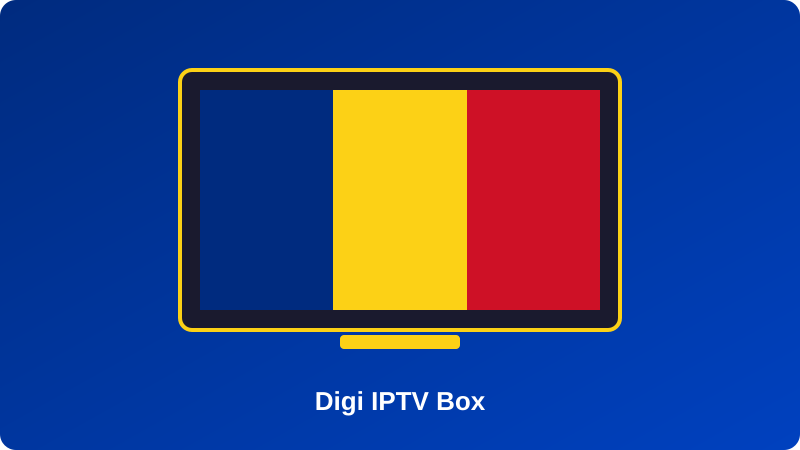
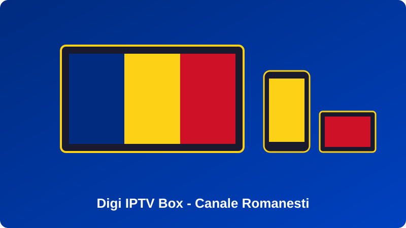

Daca ai cautat vreodata un digi iptv box, probabil vrei un lucru simplu: sa vezi canalele romanesti preferate, fara cabluri, fara tehnicieni si fara contracte care te leaga ani la rand. Stirile de seara, filmul de weekend sau meciul cu prietenii ar trebui sa porneasca imediat, pe televizorul din sufragerie.
Realitatea este ca termenul acopera mai multe lucruri. Unii se gandesc la aparatul in sine, altii la serviciul de televiziune care ruleaza pe el. Pentru cei plecati din tara, diferenta este mare: decodorul unui operator local nu merge in alta tara, in timp ce un digi iptv box conectat la internet merge oriunde.
In acest ghid explicam ce inseamna un digi iptv box, cum functioneaza, ce model sa alegi, cum il configurezi si cum eviti listele gratuite nesigure. Echipa Romania IPTV lucreaza zilnic cu familii din Romania si din diaspora, deci sfaturile vin din situatii reale. Daca esti la inceput, citeste mai intai ghidul iptv romania, apoi revino aici pentru detalii practice despre aparate.

Cuprins
- Ce este un digi iptv box si de ce il cauta romanii
- Cum functioneaza un digi iptv box pas cu pas
- Ce tip de digi iptv box alegi: Android, Linux sau stick
- Canale romanesti disponibile pe un digi iptv box
- Digi iptv box versus cablu si televiziune digitala clasica
- Cum configurezi un digi iptv box in 10 minute
- Riscuri: boxuri pre-incarcate si liste gratuite
- Digi iptv box pentru romanii din diaspora
- Intrebari frecvente
- Concluzie
Ce este un digi iptv box si de ce il cauta romanii
Expresia digi iptv box apare in cautarile romanilor care vor televiziune simpla, fara antene si fara tehnicieni. De cele mai multe ori, oamenii se gandesc la un aparat mic, conectat la televizor, care aduce canalele romanesti prin internet. Un digi iptv box nu este un decodor de cablu, ci un dispozitiv care ruleaza o aplicatie IPTV.
Digital, IPTV si box: trei termeni diferiti
Digital inseamna semnal transmis in format numeric. IPTV inseamna Internet Protocol Television, adica televiziune prin internet. Boxul este doar aparatul care afiseaza imaginea pe televizor. Cand cauti un digi iptv box, cauti de fapt combinatia dintre aceste trei lucruri.
De ce prefera lumea un box separat
Multe televizoare vechi nu au sistem inteligent. Un box mic le transforma in televizoare moderne, cu aplicatii, ghid de programe si inregistrari. Pretul este mic, iar instalarea dureaza cateva minute.
Ce nu este un digi iptv box
Nu este un produs al unui operator de cablu si nu vine cu contract pe domiciliu. Este un aparat obisnuit, pe care alegi sa il folosesti cu serviciul care ti se potriveste, inclusiv cu canale de la Romania IPTV.
Cine foloseste un astfel de aparat
Familiile din diaspora, pensionarii care vor emisiunile cunoscute si tinerii care muncesc in strainatate aleg tot mai des un box. Toti cauta acelasi lucru: pornire rapida si canale in limba romana, fara surprize.
Cum functioneaza un digi iptv box pas cu pas
Pentru a intelege avantajele unui digi iptv box, trebuie sa vezi cum ajunge imaginea pe ecran. Canalul porneste de pe un server, trece prin internet, ajunge la box, iar aplicatia il afiseaza ca pe orice alt post TV.
Serverul, boxul si televizorul
Furnizorul intretine serverele si lista de canale. Tu conectezi boxul la televizor prin HDMI, il legi la internet si instalezi aplicatia. Dupa ce introduci datele de acces, canalele apar in lista.
Viteza de internet necesara
Pentru HD ai nevoie de aproximativ 10 Mbps, iar pentru 4K de circa 25 Mbps. Daca mai multe aparate folosesc reteaua in acelasi timp, aduna cerintele. Un digi iptv box conectat prin cablu Ethernet este mai stabil decat unul conectat prin Wi-Fi.
Ghidul de programe EPG
Un serviciu bun include un ghid care arata ce ruleaza acum si ce urmeaza. Astfel nu mai cauti programul pe alte site-uri, iar inregistrarile sunt mai usor de programat.
Ce se intampla cand internetul cade
Imaginea se opreste, deoarece fluxul vine prin retea. Un router bun si un cablu intre router si box rezolva majoritatea problemelor de seara, cand toata casa foloseste conexiunea.
Ce tip de digi iptv box alegi: Android, Linux sau stick
Piata aparatelor este larga, iar un digi iptv box poate arata foarte diferit de la un model la altul. Alegerea depinde de buget, de televizorul pe care il ai si de cat de multe aplicatii vrei sa rulezi.
Android TV box
Este varianta cea mai populara. Ruleaza Android, accepta aproape orice aplicatie IPTV si are porturi HDMI, USB si Ethernet. Pentru un digi iptv box de uz general, este alegerea cea mai sigura.
Stick HDMI
Mic si usor de luat la drum, potrivit pentru cei care calatoresc des. Dezavantajul este ca se incinge mai usor si are, de obicei, mai putina memorie.
Box cu Linux sau sistem dedicat
Sunt aparate mai simple, orientate doar spre IPTV. Pornesc repede, dar au mai putine aplicatii disponibile.
Parametri care conteaza
Cauta minimum 2 GB memorie RAM, 16 GB stocare, port Ethernet si suport pentru 4K. Aceste specificatii fac diferenta intre un digi iptv box rapid si unul care se blocheaza la schimbarea canalului.
Ce evita cumparatorii atenti
Fugi de aparatele fara marca, cu specificatii exagerate si preturi suspect de mici. De multe ori memoria declarata este mai mare decat cea reala, iar boxul se blocheaza dupa cateva saptamani.
Canale romanesti disponibile pe un digi iptv box
Cand compari variante de digi iptv box, prima intrebare este ce canale primesti de fapt. Un pachet complet trebuie sa acopere stirile, filmele, sportul si desenele animate in limba romana.
Stiri si actualitate
Posturile de stiri sunt cele mai urmarite, mai ales de romanii din strainatate care vor sa ramana la curent cu ce se intampla acasa.
Filme, seriale si divertisment
Telenovelele, filmele de seara si emisiunile de weekend fac diferenta dintre un serviciu bun si unul mediocru. Verifica daca sunt incluse in lista.
Sport si evenimente live
Meciurile consuma multa banda, deci stabilitatea serverului conteaza. Testeaza serviciul intr-o seara cu meci inainte sa platesti. Un digi iptv box bun trebuie sa tina imaginea fara intreruperi.
Canale pentru copii si muzica
Desenele in limba romana si posturile muzicale completeaza pachetul pentru intreaga familie. Lista de posturi este detaliata in ghidul iptv romania.
Cum verifici lista inainte de plata
Cere lista completa de canale si bifeaza posturile pe care le urmaresti zilnic. Daca lipsesc doua sau trei dintre ele, cauta alt furnizor.

Digi iptv box versus cablu si televiziune digitala clasica
Multe familii se intreaba daca merita sa schimbe cablul cu un digi iptv box. Raspunsul depinde de nevoi, de buget si de locul in care locuiesti. Tabelul de mai jos rezuma diferentele principale.
| Criteriu | Cablu / digital clasic | Digi IPTV box |
|---|---|---|
| In strainatate | Limitat la tara | Oriunde ai internet |
| Contract | Adesea cu durata fixa | Flexibil, cu test gratuit |
| Instalare | Tehnician la domiciliu | Se conecteaza singur |
| Mutare | Contract nou la fiecare adresa | Iei boxul cu tine |
Costuri si flexibilitate
Un box nu cere taxe de instalare, iar abonamentul poate fi oprit fara penalizari. Conteaza mai ales daca locuiesti in chirie sau te muti des.
Mobilitate pentru cei plecati
Daca te muti dintr-o tara in alta, iei boxul in bagaj si il conectezi la noul televizor. Nu mai ai nevoie de un contract nou in fiecare oras.
Cand ramane cablul o varianta buna
Daca locuiesti in Romania, ai internet slab si vrei doar cateva canale de baza, cablul poate fi suficient. In rest, un digi iptv box ofera mai multa libertate.
Cum configurezi un digi iptv box in 10 minute
Configurarea unui digi iptv box este mai simpla decat pare. Dupa ce primesti datele de acces, urmezi cativa pasi si imaginea porneste. Pasii de baza sunt aceiasi pentru aproape toate modelele.
- Conecteaza boxul la televizor cu cablul HDMI si la priza.
- Leaga-l la internet, de preferat prin cablu Ethernet.
- Instaleaza o aplicatie IPTV din magazinul aparatului.
- Introdu datele primite, exact cum le-ai primit, fara spatii.
- Asteapta incarcarea canalelor si creeaza o lista de favorite.
Instalarea aplicatiei
Cauta in magazinul de aplicatii al boxului un player IPTV cunoscut. Daca aplicatia nu apare, o poti instala dintr-un fisier descarcat de pe un site de incredere.
Introducerea listei sau a contului
Majoritatea aplicatiilor accepta fie un link, fie un nume de utilizator si o parola. Copiaza datele cu grija, deoarece o litera gresita blocheaza incarcarea.
Setari care imbunatatesc imaginea
Alege rezolutia corecta pentru televizorul tau si activeaza rata de cadre automata. Un digi iptv box bine setat reduce sacadarea la sport si filme.
Probleme frecvente la prima pornire
Daca imaginea nu apare, verifica internetul, reporneste aplicatia si controleaza datele introduse. Cele mai multe probleme vin dintr-o parola scrisa gresit sau dintr-un Wi-Fi slab.
Riscuri: boxuri pre-incarcate si liste gratuite
Pe piata exista si aparate vandute cu liste "gratuite" deja instalate. Inainte sa cumperi un digi iptv box de acest fel, merita sa stii ce poti pati. Un box ieftin cu promisiuni mari ajunge adesea sa nu mai functioneze dupa cateva saptamani.
Liste care dispar peste noapte
Listele gratuite depind de servere fara garantie. Daca sursa dispare, boxul ramane fara canale, iar vanzatorul nu raspunde.
Aplicatii nesigure
Unele aparate vin cu aplicatii neverificate, care cer permisiuni inutile. Foloseste doar aplicatii din surse cunoscute si nu introduce date personale in aplicatii suspecte.
Lipsa suportului
Un box fara suport inseamna ca nu ai pe cine intreba cand apare o problema. Un furnizor serios raspunde in limba romana si te ajuta la configurare.
Cum te protejezi
Cumpara boxuri de la magazine cunoscute, cu garantie, si alege separat un serviciu cu test gratuit. Un digi iptv box curat, fara liste pre-instalate, este mai sigur si mai usor de actualizat.
Digi iptv box pentru romanii din diaspora
Pentru cei plecati, un digi iptv box este una dintre cele mai simple solutii de a pastra legatura cu limba si cu emisiunile de acasa. Serviciul functioneaza oriunde ai o conexiune buna la internet, fara antena si fara operator local.
Acelasi box, in orice tara
Boxul se conecteaza la orice televizor modern, iar canalele raman aceleasi, indiferent daca locuiesti in Italia, Spania, Germania sau Marea Britanie.
Familia in jurul televizorului
Bunicii vor jurnalul, copiii vor desene, iar parintii vor filme. O sursa stabila face ca seara sa mearga fara griji, iar copiii nascuti afara invata limba prin desene romanesti.
Cum se descurca alte comunitati
Si alte comunitati folosesc servicii dedicate. Poti vedea abordarea la greek iptv sau la tilaa iptv si sa compari cu ce primesti la Romania IPTV.
Ce informatii sa ai la tine la comanda
Spune ce televizor folosesti, ce tip de box ai si cate ecrane vrei sa conectezi. Astfel primesti de la inceput configuratia potrivita si eviti pierderile de timp.
Vrei canale romanesti care merg in fiecare seara?
Scrie-ne pe WhatsApp si primesti un test gratuit cu Romania IPTV: fara card, fara contract, cu suport in limba romana.
Cere test gratuit pe WhatsAppIntrebari frecvente
Ce este un digi iptv box?
Este un aparat mic, conectat la televizor, care aduce canale romanesti prin internet cu ajutorul unei aplicatii IPTV. Nu are legatura cu un decodor de cablu.
Pot folosi un digi iptv box in strainatate?
Da. Boxul si serviciul depind doar de conexiunea la internet, deci functioneaza in orice tara, inclusiv pentru romanii din diaspora.
Ce internet am nevoie pentru HD?
Aproximativ 10 Mbps pentru HD si circa 25 Mbps pentru 4K. Daca mai multe aparate folosesc reteaua, aduna cerintele.
Ce box este cel mai bun?
Un Android TV box cu minimum 2 GB RAM, port Ethernet si suport 4K este alegerea cea mai sigura pentru majoritatea familiilor.
Pot folosi serviciul si fara box?
Da. Smart TV-urile moderne, telefoanele, tabletele si laptopurile accepta aplicatii IPTV. Boxul este util mai ales pentru televizoarele vechi.
Este sigur sa folosesc liste gratuite?
Nu intotdeauna. Listele gratuite pot contine linkuri moarte sau cere instalari dubioase. Alege un furnizor cu suport si test gratuit.
Cum primesc un test gratuit?
Scrie-ne pe WhatsApp, spune ce aparat folosesti si primesti acces de test fara card si fara contract.
Ce fac daca un canal nu porneste?
Reporneste aplicatia si boxul, apoi verifica internetul. Daca problema continua, scrie-ne pe WhatsApp si primesti ajutor in limba romana.
Concluzie
Pe scurt, un digi iptv box este cea mai simpla cale de a aduce canalele romanesti pe televizor, in Romania sau in strainatate. Alege un Android TV box cu memorie suficienta si port Ethernet, evita aparatele cu liste gratuite pre-instalate, testeaza serviciul seara, in orele de varf, si lucreaza cu un furnizor care raspunde in limba romana.
Daca vrei sa incerci, scrie-ne pe WhatsApp si porneste-ti canalele preferate cu Romania IPTV.
Citeste in continuare: digi iptv, daily iptv list si despre iptv.